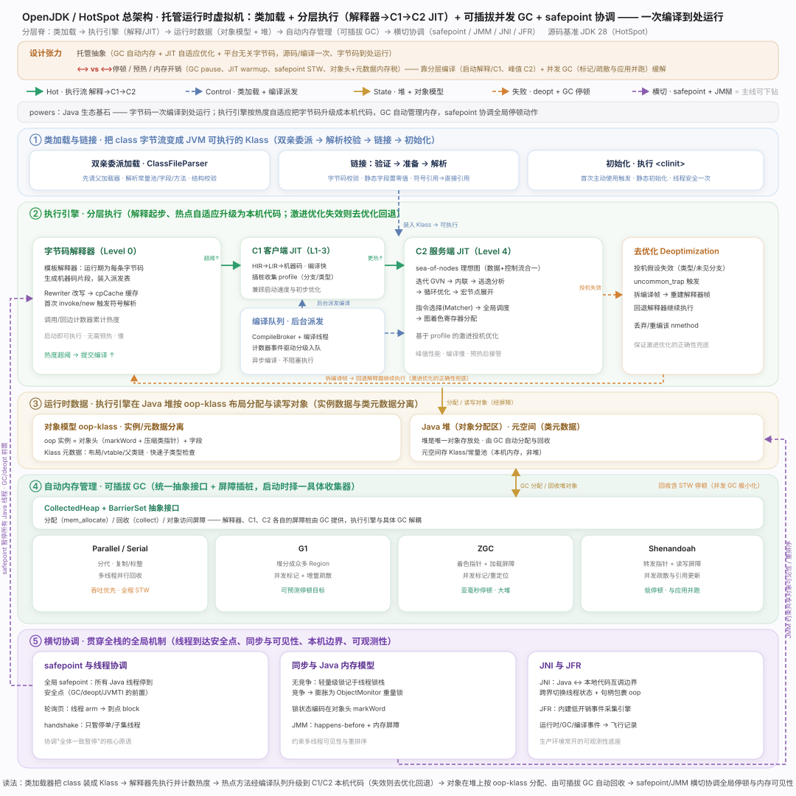
.class 字节码，通过类加载装入、分层执行引擎（解释器 → C1 → C2 JIT）自适应地编译成本机代码、在 GC 自动管理的堆上运行，并由 safepoint 协调全局停顿动作。核实基准：HotSpot 源码（JDK 28，make/conf/version-numbers.conf:DEFAULT_VERSION_FEATURE=28）。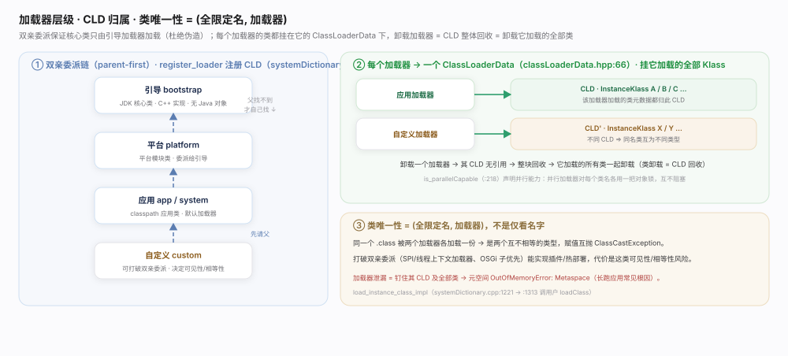
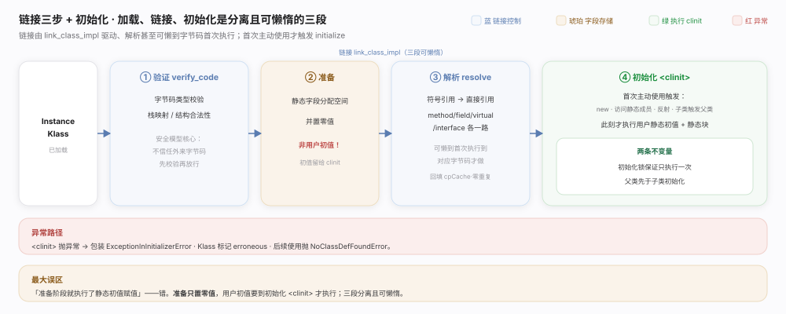
.class 字节流，变成 JVM 内部可执行的 InstanceKlass 元数据，属"执行引擎的供料口"能力域。四步：双亲委派加载 → ClassFileParser 解析 + 校验 → 链接（验证/准备/解析） → 初始化 <clinit>。它被"执行引擎"（解释器/JIT）依赖——没有 Klass，解释器无从取字节码；它又依赖"对象模型"（产物 InstanceKlass 是 Klass 元数据）与"元空间/ClassLoaderData"（Klass 的宿主与卸载单位）。核实基准：classfile/systemDictionary.cpp、classfile/classFileParser.cpp、oops/instanceKlass.cpp、interpreter/linkResolver.cpp（JDK 28）。.class 字节流交给 ClassFileParser 解析校验并 create/fill 成 InstanceKlass（挂在加载器的 ClassLoaderData 下、按 (name, 加载器) 唯一），再经 link_class_impl 的验证/准备/解析完成链接（符号引用→直接引用，可懒惰到首次执行），首次主动使用时经 initialize_impl 线程安全地执行一次 <clinit>——这是执行引擎的供料口，用"按需动态加载 + 字节码校验 + 加载器隔离"换取可移植性与安全，代价是首次加载延迟与元空间内存。ClassCastException（同名类被两个加载器各加载一份，互不相等）。OutOfMemoryError: Metaspace）的常见根因：持有类加载器引用即钉住其加载的所有类，CLD 无法回收。-Xshare:dump/-XX:SharedArchiveFile 相关。-verbose:class / -Xlog:class+load 观察类加载来源，排查"加载了错误 jar 里的同名类"。<clinit> 才执行。(name, 加载器)，不同加载器加载的同名类是不同类型，互相赋值抛 ClassCastException。| 加载器 | 加载什么 | 特点 |
|---|---|---|
| 引导 bootstrap | JDK 核心类（java.base 模块） | C++ 实现，无对应 Java 对象；委派链顶端 |
| 平台 platform | 平台模块类 | 委派给 bootstrap |
| 应用 app/system | classpath 上的应用类 | 默认加载器，委派给 platform |
| 自定义 | 按需（插件、热部署、字节码增强） | 可打破双亲委派；决定类可见性与相等性 |
| 类的唯一性 | —— | 由 (全限定名, 加载器) 共同决定，非仅名字 |
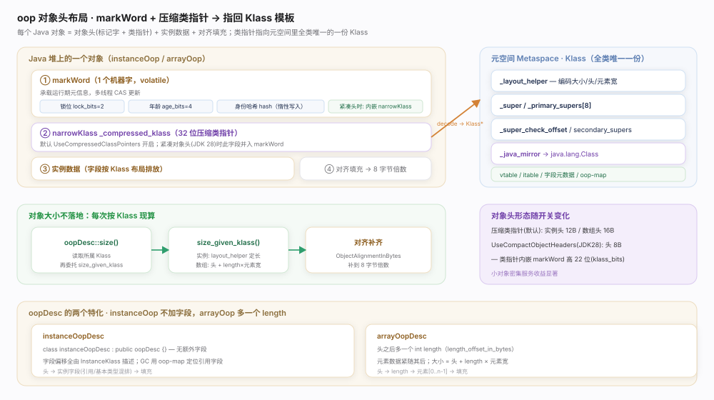
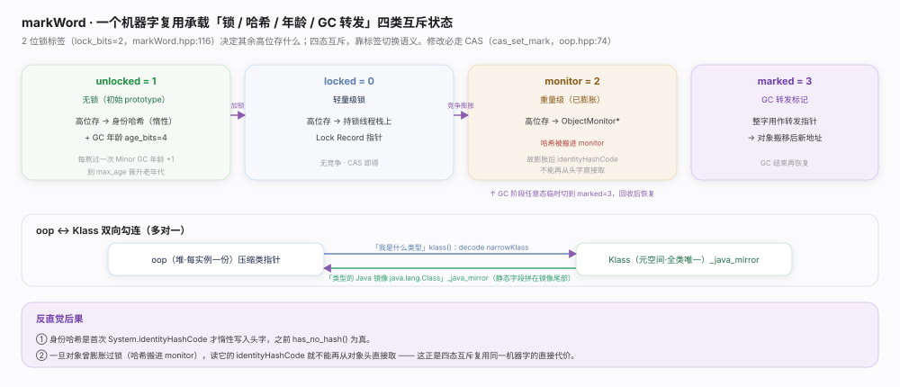
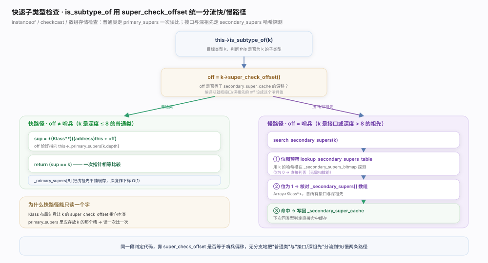
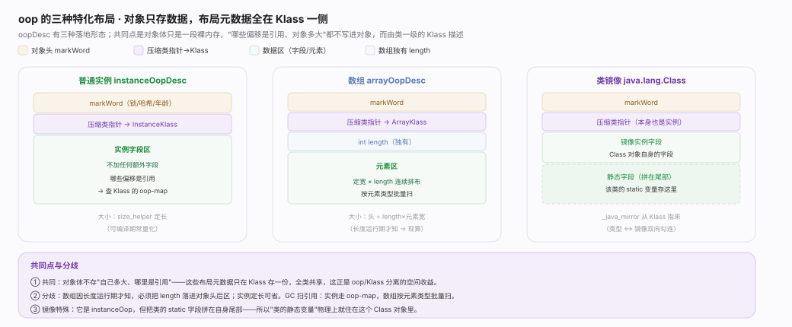
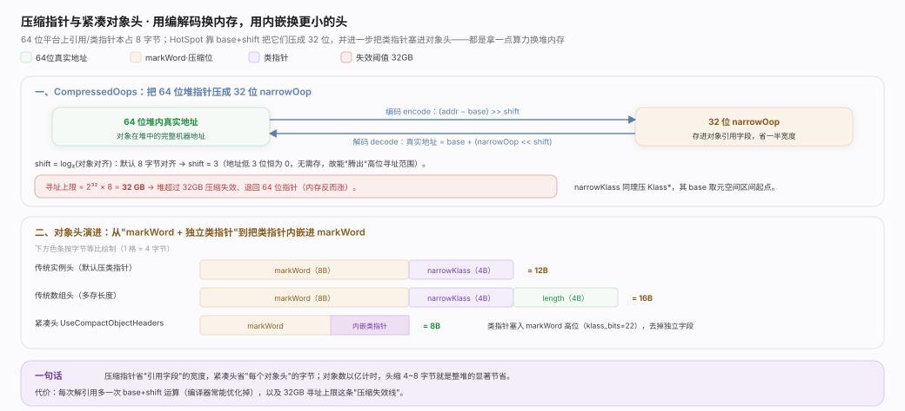
-XX:+UseCompressedOops：64 位下默认开启，堆 < 32GB 时几乎免费省一半引用内存；堆逼近上限可调 -XX:ObjectAlignmentInBytes 抬高可寻址范围（代价是每对象多几字节对齐填充）。-XX:+UseCompressedClassPointers：控制对象头里的类指针是否压缩；关掉它类指针占满 64 位，对象头变大。-XX:+UseCompactObjectHeaders（JDK 28）：把类指针塞进 markWord，普通对象头 8 字节，对小对象密集的服务收益显著；需与压缩类指针一起工作。-XX:ObjectAlignmentInBytes：影响 CompressedOops 的 _shift，也直接决定 oopDesc::size() 的对齐补齐量。oopDesc::size()（oops/oop.inline.hpp:157）每次按 Klass 的 layout_helper 现算，只有数组把 length 存进头后计算才需要读它。UseCompactObjectHeaders 后普通对象头只 8 字节。_primary_supers 一次读比（oops/klass.inline.hpp:111），只有接口和深祖先才走 search_secondary_supers 慢路径。System.identityHashCode 时才惰性写入标记字的，之前 has_no_hash() 为真；一旦对象膨胀成重量级锁，哈希会被搬到 ObjectMonitor 里。oops/oop.hpp:51）指向后者，后者靠 _java_mirror（oops/klass.hpp:144）指回类的镜像对象，二者是"实例 ↔ 类型模板"的多对一关系。| oop 种类 | C++ 类型 | 额外字段 | 大小来源 | 布局元数据 |
|---|---|---|---|---|
| 普通实例 | instanceOopDesc | 无 | size_helper()（定长） | InstanceKlass + oop-map |
| 数组 | arrayOopDesc | int length | 头 + length×元素宽 | ArrayKlass + layout_helper |
| 类镜像 | instanceOopDesc | 静态字段拼在镜像尾部 | 镜像专用 | _java_mirror 指回 Klass |
| 开关 | 作用 | 影响的字段 |
|---|---|---|
-XX:+UseCompressedOops | 引用字段压成 32 位 | 堆内 oop 字段宽度 |
-XX:+UseCompressedClassPointers | 类指针压成 narrowKlass | 对象头 _compressed_klass |
-XX:+UseCompactObjectHeaders | 类指针内嵌 markWord | 去掉独立类指针字段，头缩到 8 字节 |
-XX:ObjectAlignmentInBytes=N | 对象对齐粒度 | 决定 CompressedOops 的 shift 与寻址上限 |
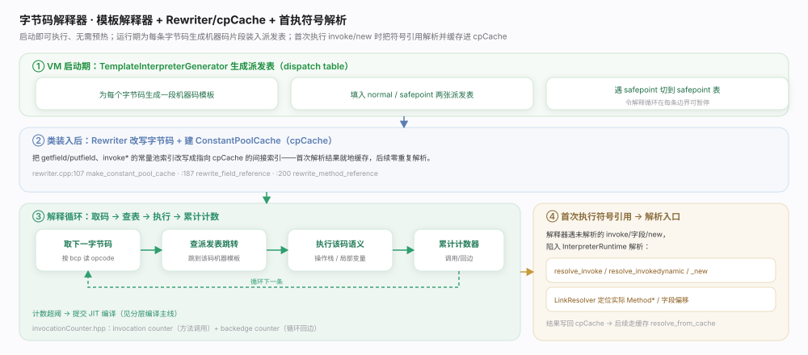
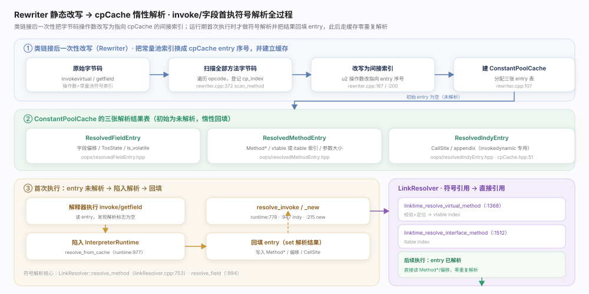
CompLevel_none）。它让方法启动即可执行、无需预热，代价是每条字节码逐条解释、慢。HotSpot 用模板解释器：VM 启动时为每条字节码运行期生成一段本机机器码模板，装入派发表；解释循环靠"取码 → 查表跳转 → 执行"高速运转，同时累计热度计数器，超阈就把方法交给 JIT。核实基准：interpreter/templateInterpreter.cpp、interpreter/rewriter.cpp、interpreter/interpreterRuntime.cpp、interpreter/linkResolver.cpp（JDK 28）。-Xint（runtime/arguments.cpp:2271）：纯解释执行、关闭 JIT，用于排查 JIT bug 或极致快启动的短命进程；-Xmixed（arguments.cpp:2275，默认）解释+编译混合；-Xcomp（arguments.cpp:2278）尽量全编译，牺牲启动换峰值。-XX:CompileThreshold=N（runtime/globals.hpp:1666，product_pd）：非分层模式下方法调用/回边计数升级 JIT 的阈值；分层编译（默认 TieredCompilation）下改由各层独立阈值控制，调这个值意义不大。-XX:TieredStopAtLevel=1：只到 C1，跳过 C2，适合启动敏感、峰值不敏感的服务。-XX:+PrintInterpreter（runtime/globals.hpp:1114，DIAGNOSTIC）：打印生成出的解释器 codelet 汇编，用于研究派发表/模板。UseTemplateInterpreter 开关已随汇编解释器成为默认而移除，Zero 是独立构建变体，不能运行期切换）。invoke*/字段/new 才解析，并把结果缓存进 cpCache 的对应 entry。-XX:CompileThreshold 就能控制何时编译"：仅在关闭分层编译时有效；默认分层模式下各层有各自阈值，该开关基本失灵。| 维度 | 模板解释器（默认） | C++/Zero 解释器 | JIT 编译代码（C1/C2） |
|---|---|---|---|
| 派发方式 | 派发表跳机器码模板 | 计算 goto / switch | 无派发，直接机器码 |
| 生成时机 | VM 启动期 emit | 编译期固定 | 运行期按热点编译 |
| 启动速度 | 快，无需预热 | 快 | 慢（要预热/编译） |
| 峰值性能 | 低 | 最低 | 高 |
| 可移植性 | 需各架构汇编模板 | 纯 C++，任意架构 | 需各架构后端 |
| 典型用途 | 冷代码、预热期、兜底 | 无汇编模板的移植架构 | 热点方法 |
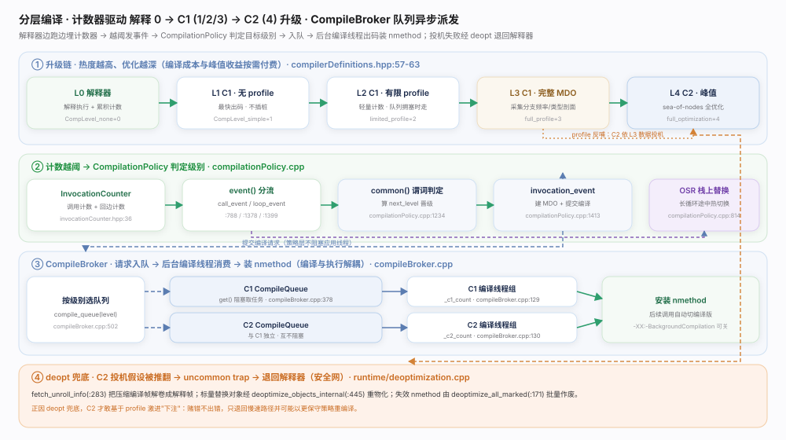
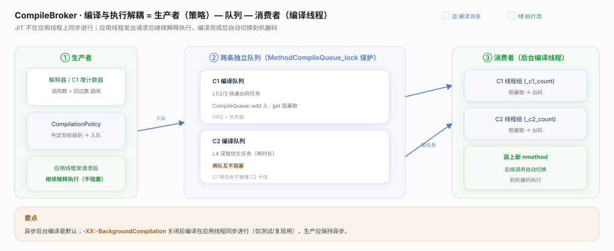
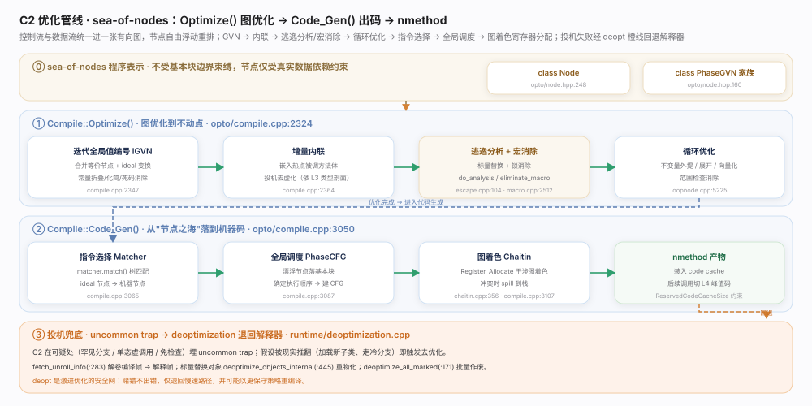
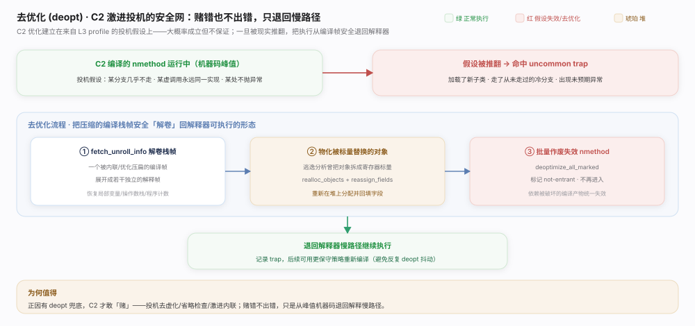
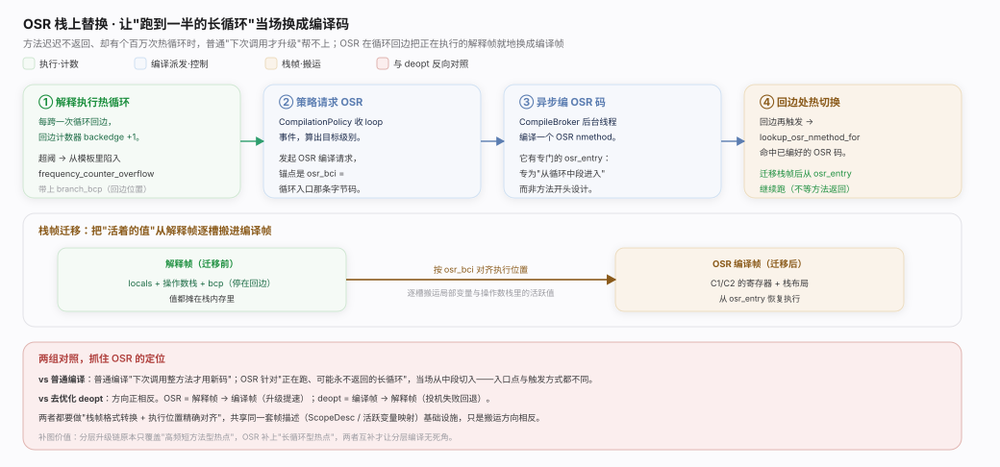
CompLevel 0 → 1/2/3 → 4 逐级爬升，低层 C1 快速产出带 profile 的机器码，高层 C2 依据 profile 做激进投机优化；一旦投机假设被现实推翻，去优化(deoptimization)把执行安全地退回解释器。本篇聚焦这条"计数器驱动的升级链 + C2 sea-of-nodes 优化管线 + deopt 兜底"的支撑机制。核实基准 JDK 28：compiler/compilerDefinitions.hpp、compiler/compilationPolicy.cpp、compiler/compileBroker.cpp、c1/c1_Compilation.cpp、opto/compile.cpp、opto/escape.cpp、opto/macro.cpp、opto/chaitin.cpp、runtime/deoptimization.cpp。CompilationPolicy 依计数沿 CompLevel 0→1/2/3→4 驱动升级并经 CompileBroker 队列异步派发，C1 三档以线性扫描快速出带 profile 的码，C2 以 sea-of-nodes 消费 profile 做 GVN/内联/逃逸分析/循环优化/图着色的激进投机优化，再以 uncommon trap 触发的 deopt 为投机兜底，从而在同一进程内既保证启动即用、又逼近原生峰值。-XX:+TieredCompilation：分层编译总开关(现代 JVM 默认开启)。关闭后退化为单编译器模式。-XX:TieredStopAtLevel=N：把升级链截断在第 N 层。设为 1 即"只用 C1、永不 C2"(适合极短命进程或追求确定性延迟的场景)；设为 4 为完整分层。-XX:CompileThreshold=N：非分层模式下的编译阈值(方法调用+回边计数)。分层模式下阈值由 compilationPolicy 的一族 Tier* 参数控制。-XX:-BackgroundCompilation：关闭后台编译，让编译在应用线程同步进行——通常仅用于测试/复现，生产环境应保持后台异步(依赖 compileBroker 的队列机制)。-XX:+PrintCompilation：打印每次编译事件(方法、级别、OSR 标记、made-not-entrant 等)，是观测升级链与频繁 deopt 最直接的手段；配合 -XX:+PrintTieredEvents 可看分层转移。-XX:ReservedCodeCacheSize=N：编译产物(nmethod)存放在 code cache，满了会触发"编译停止 + 方法清扫"，峰值性能骤降。长跑大应用需上调并监控。runtime/deoptimization.cpp:283)，编译帧被解卷回解释帧；这是特性不是 bug。0→3→4、0→2→4、停在 1 等多条路径，由 common()(compiler/compilationPolicy.cpp:1234)按队列压力和方法特征动态选择。opto/escape.cpp:104)是使能条件，实际收益是标量替换/锁消除；未逃逸对象可能被拆散成标量而根本不"分配"。compilationPolicy.cpp:814 附近)，入口点和触发方式都与"下次调用才切换"的普通编译不同。| 维度 | C1（Client Compiler） | C2（Server Compiler） |
|---|---|---|
| 目标 | 编译快、启动快 | 峰值性能极致 |
| IR | HIR → LIR（c1/c1_Compilation.cpp） | sea-of-nodes（opto/node.hpp:248） |
| 寄存器分配 | 线性扫描（c1/c1_LinearScan.*） | 图着色 Chaitin（opto/chaitin.cpp:356） |
| profile | level 3 采集，供 C2 使用 | 消费 profile 做投机优化 |
| 关键优化 | 局部优化、少量内联 | GVN、逃逸分析、循环优化、投机内联 |
| 投机 / deopt | 基本不投机 | 大量投机 + uncommon trap 兜底 |
| 编译耗时 | 短（毫秒级） | 长（可达 C1 数倍以上） |
| 对应级别 | 1 / 2 / 3 | 4 |
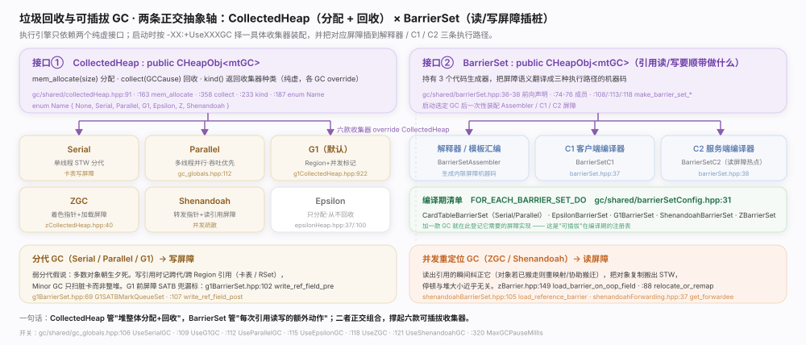
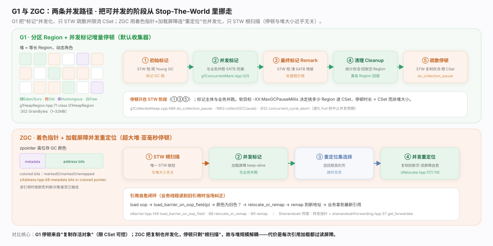
CollectedHeap（谁来分配、谁来回收整个堆）与 BarrierSet（对象引用的读/写如何插桩），执行引擎（解释器、C1、C2）只依赖这两个抽象。启动时按 -XX:+UseG1GC / -XX:+UseZGC 等开关择一具体实现装配进来。分代 GC（Serial/Parallel/G1）依赖"弱分代假说"用写屏障维护跨代引用；并发 GC（G1 的并发标记、ZGC/Shenandoah 的并发重定位）用读/写屏障让回收线程与业务线程并跑，把 Stop-The-World 停顿从"扫整堆"压缩到"扫根+若干快照增量"。核实基准：gc/shared/collectedHeap.hpp、gc/shared/barrierSet.hpp、gc/shared/barrierSetConfig.hpp、gc/{serial,parallel,g1,z,shenandoah,epsilon}/（JDK 28）。CollectedHeap（分配+回收）与 BarrierSet（读/写屏障插桩到解释器/C1/C2）两条正交接口，启动时按 -XX:+UseXXXGC 择一装配；分代 GC 用写屏障+卡表/RSet 缩小扫描面，G1 用 Region+并发标记把"标记"搬出 STW，ZGC/Shenandoah 再用着色指针/转发指针+读屏障把"重定位"也并发化——三代演进的同一主题，就是不断把可并发的阶段从 Stop-The-World 里挪走。-XX:+UseG1GC（默认，均衡）、-XX:+UseParallelGC（批处理/吞吐优先，能容忍较长停顿）、-XX:+UseZGC（大堆低延迟）、-XX:+UseShenandoahGC（大堆低延迟，OpenJDK 发行版需含该模块）、-XX:+UseSerialGC（容器小堆/单核）。多个开关互斥，同开会报错。-Xms 与 -Xmx 建议设成相等，避免运行期堆伸缩带来的额外 Full GC 与页面提交抖动；容器里配合 -XX:MaxRAMPercentage 按份额取堆。-XX:MaxGCPauseMillis=N（对应 gc/shared/gc_globals.hpp:320）作软目标——它是"尽力而为"，设得过低会导致 CSet 变小、GC 变频、吞吐下降，并非越小越好。-XX:G1HeapRegionSize 覆盖 GrainBytes 默认值，大对象多时适当调大以减少 Humongous 分配。-XX:+UseEpsilonGC（需 -XX:+UnlockExperimentalVMOptions）让 JVM 只分配不回收，用于测量"无 GC 干扰"下的分配吞吐，或运行注定在堆耗尽前退出的短命任务。-Xlog:gc*（Unified Logging）打印各阶段耗时，定位停顿是卡在标记、疏散还是根扫描。MaxGCPauseMillis 设得越小停顿越短"：它是软目标。设过低会让 G1 缩小 CSet、更频繁 GC，累计开销上升，甚至更容易退化 Full GC。System.gc() 能立刻清干净"：它只是把原因交给 collect(GCCause::Cause)（如 g1CollectedHeap.cpp:1863），是否/何时/怎么回收由 GC 决定，且可能触发昂贵的 Full GC；生产环境常用 -XX:+DisableExplicitGC 屏蔽。CollectedHeap 抽象是否足够解耦的基准实现，也是隔离 GC 干扰做分配基准测试、跑短命作业的正经工具。| 收集器 | 开关 | 停顿特征 | 吞吐 | 适用堆规模 | 核心机制锚点 |
|---|---|---|---|---|---|
| Serial | -XX:+UseSerialGC | STW，单线程 | 中（小堆无并行开销） | 小（<100MB～数百MB） | CardTableBarrierSet；分代复制/标记整理 |
| Parallel | -XX:+UseParallelGC | STW，多线程并行 | 最高（吞吐优先） | 中大 | 卡表；gc/shared/gc_globals.hpp:112 UseParallelGC |
| G1 | -XX:+UseG1GC（默认） | 可预测、软实时 | 高 | 中～大（几 GB～几十 GB） | Region+并发标记；g1ConcurrentMark.hpp:325、g1HeapRegion.hpp:71 |
| ZGC | -XX:+UseZGC | 亚毫秒，与堆无关 | 中高 | 超大（几百 GB～TB） | 着色指针+加载屏障；zBarrier.hpp:149、zAddress.hpp:48 |
| Shenandoah | -XX:+UseShenandoahGC | 亚毫秒～低毫秒 | 中高 | 大～超大 | 转发指针+读引用屏障；shenandoahBarrierSet.hpp:105 |
| Epsilon | -XX:+UseEpsilonGC | 无回收即无 GC 停顿 | 极高（无屏障负担） | 短命/压测/无 GC 场景 | 只分配不回收；epsilonHeap.hpp:37/:100 |
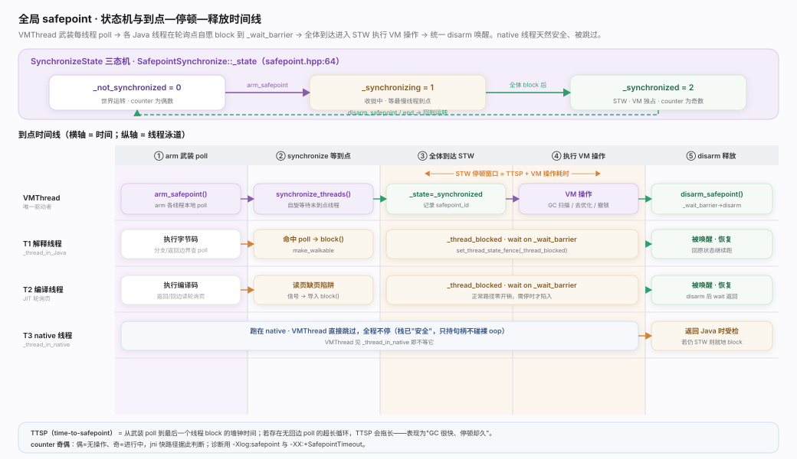
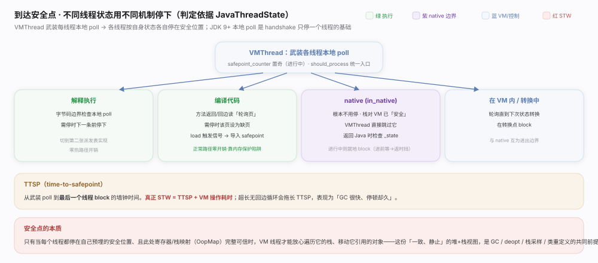
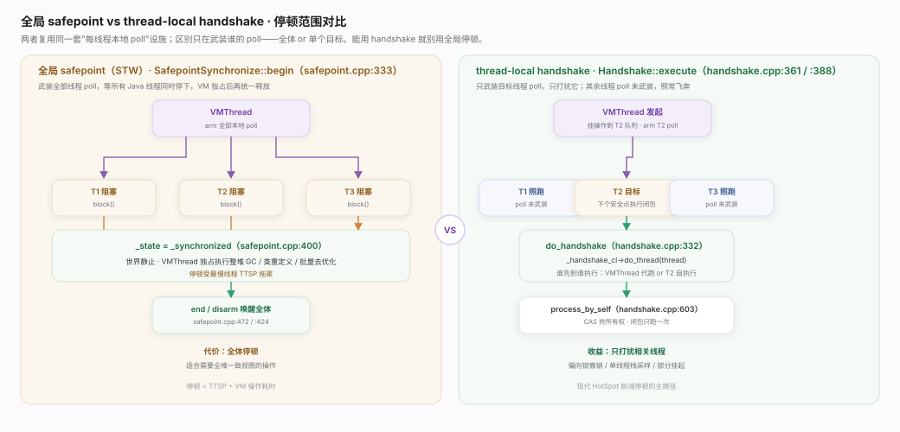
runtime/safepoint.cpp、runtime/safepointMechanism.hpp、runtime/handshake.cpp（JDK 28）。_wait_barrier、全体到达即进入 STW 执行 VM 操作、再统一 disarm 唤醒；native 线程因不碰裸 oop 而天然安全、只在返回时受检；而 handshake 复用同一套本地 poll，把"全世界停一下"降级成"只打扰相关线程"，成为现代 HotSpot 削减停顿的主路径。-XX:+UseCountedLoopSafepoints（opto/c2_globals.hpp:251，默认 false）：让 C2 在计数循环回边插入 safepoint poll。若观测到"长循环导致 TTSP 飙高"，开启它可缩短到点时间，代价是循环体每圈多一次 poll。-Xlog:safepoint（统一日志，JDK 9+）：打印每次 safepoint 的 TTSP、同步耗时、操作耗时、命中 poll 的线程数。旧版的 -XX:+PrintSafepointStatistics/PrintSafepointStatisticsCount 已在新 JDK 移除，改用 -Xlog:safepoint 及 safepoint+stats。-XX:GuaranteedSafepointInterval=<ms>（runtime/globals.hpp:1250，DIAGNOSTIC，默认 0=关）：即使无人请求，也周期性触发一次 safepoint，用于清理累积的清扫工作。设为 0 可减少无谓停顿。-XX:+SafepointTimeout 配 -XX:SafepointTimeoutDelay=<ms>（runtime/globals.hpp:427）：到点超过阈值就打印掉队线程，用来定位"谁没及时到点"，对应 synchronize_threads 里的超时检查（runtime/safepoint.cpp:236）。-Xlog:safepoint 里 TTSP 是否远大于 VM 操作耗时；若是，问题在"线程到点慢"（长循环/长 native 回调/换页），而非 GC 本身。getStackTrace、类重定义等都会触发 safepoint。日志里的停顿未必来自 GC。_thread_in_native（utilities/globalDefinitions.hpp:1028）本身就是安全区，VMThread 直接跳过它；真正的检查发生在它返回 Java 的转换点。runtime/handshake.cpp:388）只打扰目标线程，其余线程照跑。jni_GetField 快路径靠它判断是否有 safepoint 正在进行（runtime/safepoint.hpp:64 附近注释）。| 维度 | 全局 safepoint | thread-local handshake |
|---|---|---|
| 停顿范围 | 全体 Java 线程同时静止（STW） | 单个或逐个线程，各自到点，不同时停 |
| 驱动者 | 唯一 VMThread | VMThread 发起，可由目标线程自执行 |
| 状态机 | _not_synchronized/_synchronizing/_synchronized（runtime/safepoint.hpp:64） | 每线程 handshake 队列 + 本地 poll |
| 核心入口 | SafepointSynchronize::begin/end（runtime/safepoint.cpp:333/:472） | Handshake::execute（runtime/handshake.cpp:361/:388） |
| 一致视图 | 全堆+全栈一致，可移动对象 | 仅目标线程栈一致 |
| 典型用途 | 整堆 GC 阶段、类重定义、批量去优化 | 偏向锁撤销、单线程栈采样、线程挂起 |
| 停顿代价 | 高（受最慢线程 TTSP 拖累） | 低（只等相关线程） |
| 引入版本 | HotSpot 早期 | JDK 10（本地 poll 于 JDK 9） |
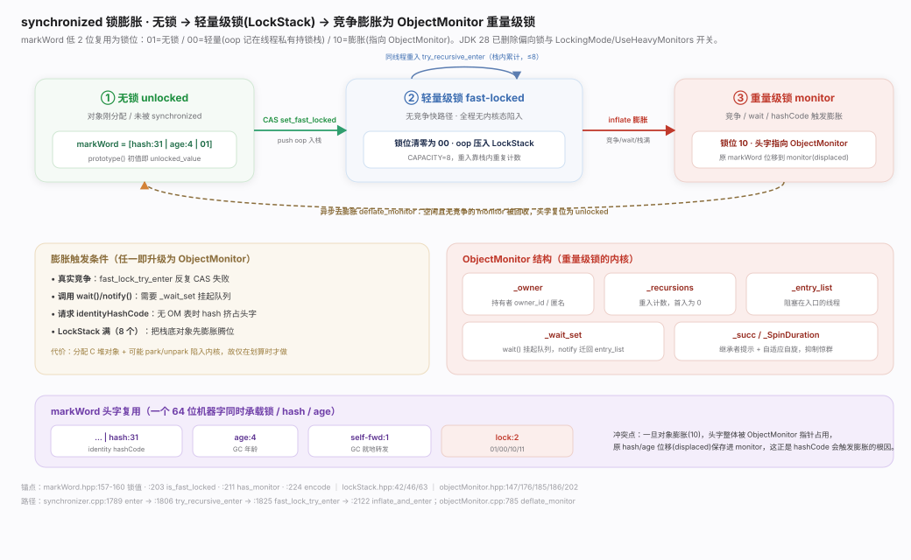
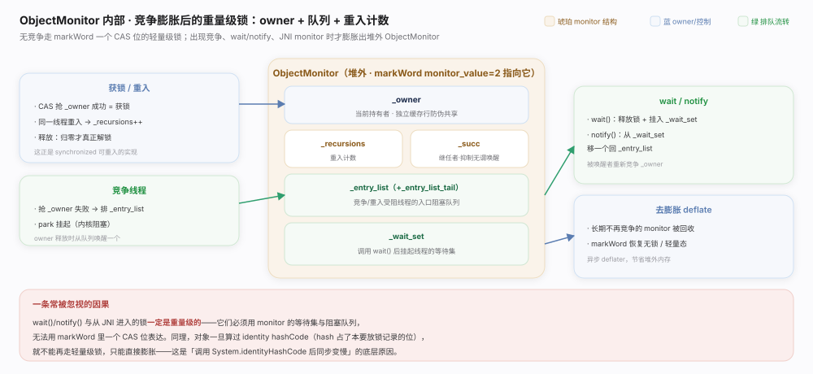
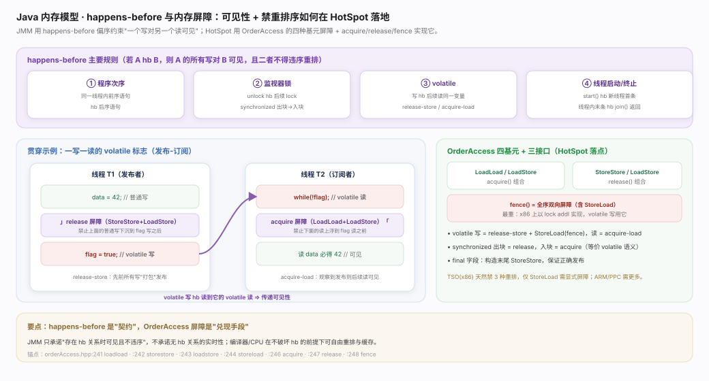
synchronized 与内存可见性的底层实现，属"横切协调"能力域。HotSpot 把锁做成分级的：无竞争走线程私有的轻量级锁栈 LockStack（CAS，极快），出现竞争才膨胀成重量级 ObjectMonitor（依赖 OS 互斥 / park-unpark 阻塞队列）；锁状态就地编码在对象头 markWord（依赖"对象模型"主线的头字布局）。JMM（Java 内存模型） 用 happens-before 规定多线程可见性与有序性，JVM 据此在编译期（尤其 C2）与运行期插入内存屏障约束重排序。核实基准：runtime/synchronizer.cpp、runtime/objectMonitor.cpp、runtime/lockStack.hpp、oops/markWord.hpp、runtime/orderAccess.hpp（JDK 28）。_owner/_recursions/阻塞队列、依赖 OS park-unpark 的重量级 ObjectMonitor，锁状态（含 hash/age）就地编码在对象头 markWord 的 2 位锁位里；JMM 用 happens-before 规定多线程可见性与有序性、JVM 据此在 C2 与运行期插入 acquire/release 及全屏障约束重排序——用"简单并发原语 + 可移植内存语义"换开发便利，用"锁分级 + 锁消除 + 就地编码"把竞争、屏障与内存的代价压到最小。-XX:LockingMode=<n>：切换锁实现（当前默认为轻量级 LockStack 模式；另有传统 legacy 模式与仅重量级 monitor 模式）。生产极少动。-XX:+UseHeavyMonitors：强制所有锁直接走重量级 ObjectMonitor（调试 / 排查用，会显著变慢，勿用于生产）。-XX:+PrintConcurrentLocks（线程转储含 j.u.c 锁信息）辅助排查死锁 / 争用。java.util.concurrent（ReentrantLock、原子类）而非裸 synchronized——更细粒度、可中断、可超时；缩小锁范围与持锁时间降低膨胀概率；无共享则无需同步。quick_enter），很轻；只有竞争 / wait-notify / JNI monitor 才膨胀变重。i++）的原子性。| 形态 | markWord 锁位 | 数据结构 | 开销 | 触发条件 |
|---|---|---|---|---|
| 无锁 | unlocked_value=1 | 头字存 hash/age | 零 | 从未加锁 |
| 轻量级锁 | locked_value=0 | 线程私有 LockStack（lockStack.hpp:46 CAPACITY=8） | CAS + 压栈，纳秒级 | 无竞争 synchronized |
| 重量级锁 | monitor_value=2 | 堆外 ObjectMonitor（_owner/_recursions/队列） | park/unpark + 上下文切换 | 竞争、wait/notify、JNI monitor、hash 已占位 |
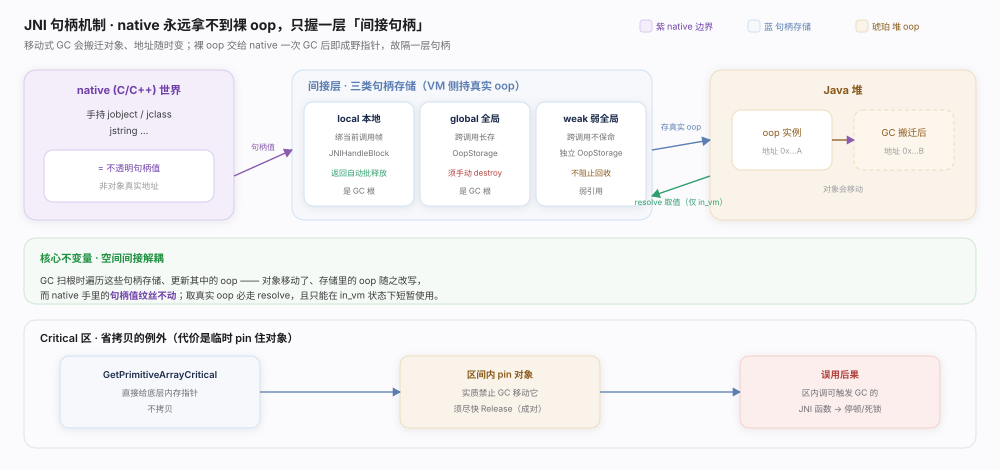
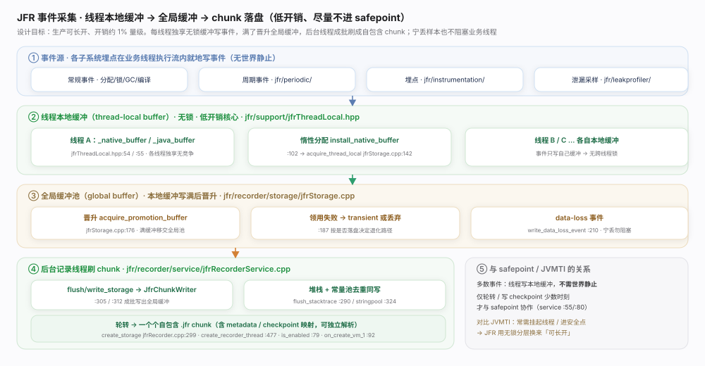
in_Java / in_vm / in_native 之间切换，裸 oop 指针一律用句柄（handle）包一层，让"会移动对象的 GC"和"拿着对象引用的 native 代码"互不打架。JFR（Flight Recorder） 是 JVM 内建的、可在生产环境长期开启的低开销可观测性引擎——它把事件先写进线程本地缓冲，满了再晋升到全局缓冲，最后成批落成 chunk 文件，用"几乎不加锁、不进 safepoint"的设计把观测开销压到个位数百分比。两者一个管"让外部代码安全进来"，一个管"让内部状态低成本流出"。核实基准：prims/jni.cpp、runtime/interfaceSupport.inline.hpp、runtime/jniHandles.hpp、prims/jniCheck.cpp、jfr/recorder/jfrRecorder.cpp、jfr/support/jfrThreadLocal.hpp、jfr/recorder/storage/jfrStorage.cpp（JDK 28）。jni_* 被 JNI_ENTRY 宏（interfaceSupport.inline.hpp:362）包裹，进实现体时用 ThreadInVMfromNative 把线程从 in_native 切到 in_vm、退出自动切回，因为 in_native 对 safepoint 是"已安全"的，且所有对象引用都用 local/global/weak 句柄（jniHandles.hpp:95/101/106）间接持有，让"会移动对象的 GC"与"native 手里的引用"解耦；JFR 让内部状态低成本"出去"——事件先写线程本地无锁缓冲（jfrThreadLocal.hpp:54），满了晋升全局缓冲（jfrStorage.cpp:176），后台线程成批刷成自包含 chunk，尽量不进 safepoint、宁丢勿阻塞，把可观测性开销压到生产可长开的量级——一个用"空间间接 + 状态契约"隔离托管边界，一个用"时间延迟 + 无锁分层"隔离观测边界，本质都是不让边界一侧的实现细节泄漏到另一侧。-Xcheck:jni：开发/测试期开启 prims/jniCheck.cpp 校验层，抓 native 侧 JNI 误用；生产环境关闭（有开销）。-XX:+FlightRecorder（老版本需显式开启，新版默认可用）配合 -XX:StartFlightRecording=... 在启动即开始录制，如 -XX:StartFlightRecording=duration=60s,filename=rec.jfr。-XX:FlightRecorderOptions=...：调整缓冲策略，如 globalbuffersize、memorysize、maxchunksize、threadbuffersize——线程本地缓冲越大，晋升越少、开销越低，但内存占用越高。-Xlog:jfr（统一日志）：观察 JFR 自身的启动、轮转、chunk 落盘与数据丢失情况；出现大量 data-loss 说明事件频率超过缓冲吞吐，应调大缓冲或降低采样。GetPrimitiveArrayCritical 区间要短且区内不调可能触发 GC 的 JNI 函数。interfaceSupport.inline.hpp:102、句柄分配、无法内联），不是调用指令本身。解法是减少跨界次数而非优化单次。make_global（jniHandles.hpp:101）。_thread_in_native 被视为"已安全"，GC 无需等它；它返回 VM 时才自检并可能 block。jfrStorage.cpp:210）——它选择"宁丢勿阻塞"。| 句柄类型 | 创建 API | 生命周期 | 阻止 GC 回收对象？ | 释放方式 | 典型用途 |
|---|---|---|---|---|---|
| local 本地句柄 | make_local（jniHandles.hpp:95） | 当前 native 方法调用帧内 | 是（作为 GC 根） | 方法返回自动批量释放 | 方法内临时引用、返回值 |
| global 全局句柄 | make_global（:101） | 跨调用长期存活 | 是（作为 GC 根） | 手动 destroy_global（:103） | 缓存类/方法 ID、长期持有对象 |
| weak global 弱全局句柄 | make_weak_global（:106） | 跨调用，但不保命 | 否（弱引用） | 手动 destroy_weak_global（:108） | 缓存但允许被回收的对象 |
| 类别 | 目录/机制 | 说明 | |||
| 常规事件 | 各子系统埋点 → thread-local buffer | 分配、锁竞争、GC、编译等，直接写线程本地缓冲 | |||
| 周期事件 | jfr/periodic/ | 后台线程按周期采样（如线程转储、CPU 负载） | |||
| instrumentation | jfr/instrumentation/ | 字节码级埋点，为 Java 层事件注入采集代码 | |||
| leak profiler | jfr/leakprofiler/ | 老年代对象采样，辅助定位内存泄漏 | |||
| metadata / checkpoint | jfr/metadata/ + service checkpoint | 类型定义、线程/栈/常量池映射，随 chunk 落盘保证自包含 |